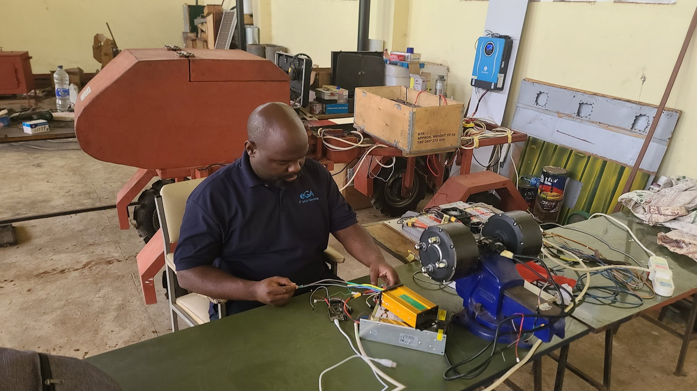
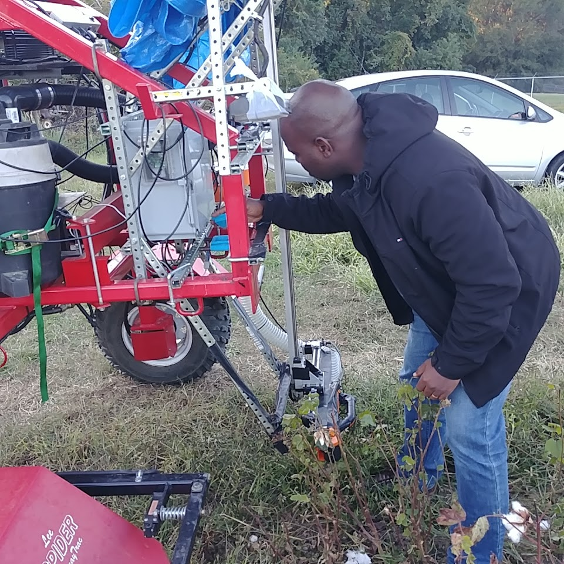
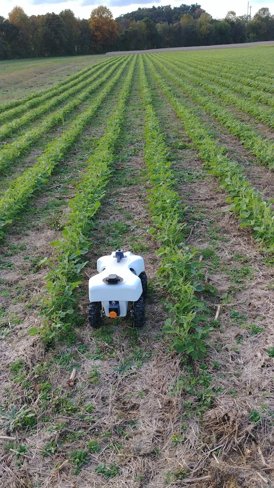
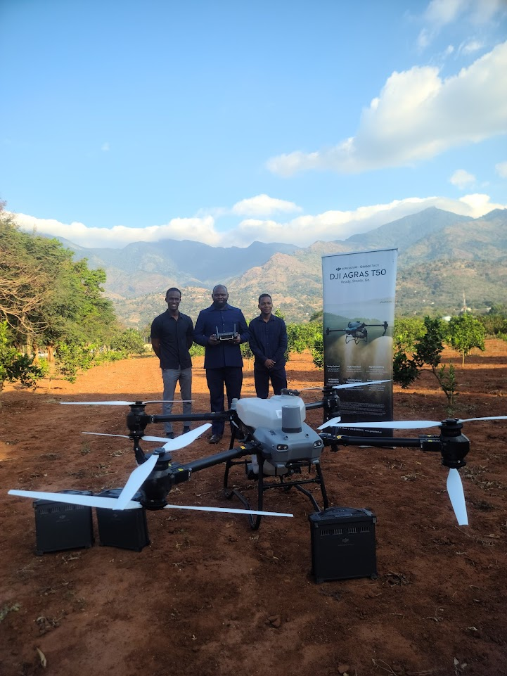

Dr. Kadeghe
Goodluck Fue (PhD, P.Eng PE11382)
Senior Lecturer & Registered Professional Engineer (PE11382).
Innovating at the intersection of Mechatronics,
Artificial
Intelligence,
and
Digital Agriculture.
Expertise in Robotics & AI
Showcasing advanced capabilities in robotics engineering, artificial intelligence, and autonomous systems
Robotics Engineering
Design and development of autonomous robotic systems for precision agriculture and industrial applications
Artificial Intelligence
Machine learning algorithms, computer vision, and AI-driven decision systems for agricultural automation
Computer Vision
Advanced image processing and machine vision systems for crop monitoring and quality assessment
Autonomous Systems
Development of self-operating machinery and drones for precision farming and data collection
Data Analytics
Big data processing and analytics for agricultural insights and predictive modeling
IoT Integration
Internet of Things solutions connecting sensors, devices, and cloud platforms for smart agriculture
Latest Updates
Development of the Education Simulator for Ministry of EST
Participated at WAMO in Morogoro, Tanzana.
Combined 10th IRSPBL, 7th SASEE, and 5th SoTL
Participated at University of Pretoria, South Africa held at Future Africa, Pretoria.
Scientific Conference Presentation
Presented 2 papers on Multimodal and Weather World Models at the 2nd Five University Consortium Scientific Conference.
Paper Accepted in Frontiers
"Digitalization of Precision Fertilization in East Africa: Adoption, Benefits and Losses" in Frontiers in Sustainable Food Systems.
Biography
Learn more about my professional journey, biography, and expertise.
Research
Explore my current and past research projects in AI and Agriculture.
Publications
View my complete list of peer-reviewed journal articles and papers.